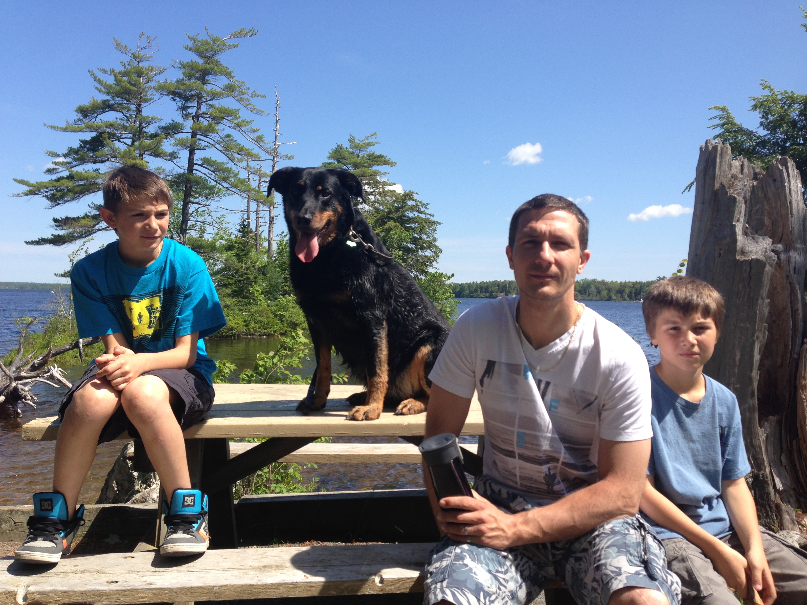

Tout a commencé avec Sanji.
Berger belge malinois, il avait un petit souci avec les voitures — rien de dramatique au départ. N'étant pas éducatrice canine moi-même, j'ai fait ce que beaucoup de propriétaires feraient : j'ai appelé des professionnels, connus et reconnus. Trop souvent, j'ai entendu la même idée reçue : « c'est un malinois, il faut de la poigne. » Sauf que ce n'était pas son cas. Il y a autant de tempéraments que de chiens, et un bon accompagnement, c'est d'abord savoir s'adapter à celui qu'on a en face de soi — pas appliquer une méthode toute faite parce qu'on a lu la race sur le pedigree.
Un épisode particulièrement marquant l'a rendu réactif envers les humains. Son souci de voiture, lui, n'a jamais été résolu. Peu à peu, je l'ai moins sorti, il s'est désocialisé — moi qui avais toujours eu des chiens compagnons de canoë et de randonnée, je suis devenue casanière. C'est de cette expérience qu'est né FreePaws.
Depuis, je me forme sérieusement : je suis actuellement en formation d'éducatrice canine, et j'approfondis mes connaissances vétérinaires par moi-même. Non pas pour devenir éducatrice ou comportementaliste — ce n'est pas mon objectif — mais pour offrir un accompagnement en prévention qui a du sens : aux primo-adoptants, aux familles avec ou sans enfants, à celles qui songent à agrandir la tribu. Et quand une situation dépasse mes compétences, orienter vers la bonne personne, sans détour.
Nami, ma berger allemand, s'est un jour fait attaquer par un chien senior. Les gens ont peur des chiens sans laisse, et ils n'ont pas tort : la loi l'impose, pour de bonnes raisons. Mais un chien a aussi besoin de courir librement pour être équilibré — comme un enfant a besoin de mouvement et d'exploration pour se développer. Respecter la loi et respecter ce besoin, ce n'est pas incompatible : il suffit d'avoir des endroits pensés pour ça. C'est tout l'objectif de FreePaws Park.
Je ne connais pas encore tous les besoins des chiens dans le détail — mais je suis convaincue qu'ils reposent sur une base aussi fondamentale que celle des enfants.
Je ne suis pas (encore) éducatrice canine, et mon objectif n'est pas de le devenir pour en faire mon métier : je veux rester dans l'accompagnement et la prévention. Ce que j'apporte vient d'ailleurs : quinze ans à travailler avec des enfants de 4 mois à 10 ans au Canada, dont plusieurs années en tant que directrice de centre, à accompagner des familles comme des équipes autour d'enfants à besoins particuliers. J'ai appris à travailler main dans la main avec des spécialistes, sans jamais me substituer à eux — c'est exactement l'esprit que j'apporte aujourd'hui au binôme humain-chien.
Mon plus jeune fils en est un bon exemple : mordu un jour par un chien qui n'était pas le nôtre, il a eu peur des chiens inconnus pendant un temps — alors qu'il a toujours grandi entouré des nôtres. Nous avons travaillé cela ensemble, tranquillement, jusqu'à ce qu'il retrouve sa confiance. Aujourd'hui, il est à l'aise aux côtés d'un chien qu'il ne connaît pas, et sait aussi reconnaître quand un chien est trop excité pour lui, et s'en écarter. C'est exactement ce genre d'accompagnement — patient, individualisé, respectueux du rythme de chacun — que je veux offrir aux familles que je rencontre.
Sanji reste prudent avec les inconnus ; Nami, elle, est sociable au possible — je l'emmènerais littéralement partout.
Chow-chow
Tout bavant, tout pataud

Nos âmes sœurs, grandis avec les enfants
Berger malinois, en travail avec son éducateur
Berger allemand, en rééducation-post SLO
Mon retour en Belgique n'a pas été simple : diplômes non reconnus, un métier de cœur inaccessible tel quel, une reconversion qui n'a pas abouti comme prévu. FreePaws est né de cette période : l'envie de me relancer là où mon expérience, même non homologuée sur papier, pourrait vraiment servir.
Je n'ai pas choisi la région au hasard : je voulais aller là où les gens ont besoin de ce projet. Une enquête et une analyse du terrain m'ont menée, après plusieurs pistes, vers l'axe Liège–Huy–Waremme — la région où j'ai moi-même grandi.
Prendre rendez-vous